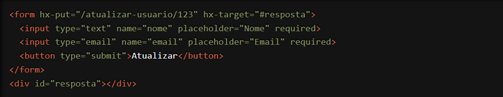

Estamos entusiasmados em compartilhar com você uma das funcionalidades mais poderosas do HTMX: o atributo `hx-put`. Esta ferramenta incrível permite atualizar dados no servidor usando uma requisição HTTP PUT diretamente a partir de elementos HTML, sem a necessidade de escrever código JavaScript adicional. Vamos explorar como essa funcionalidade pode transformar a maneira como você desenvolve suas aplicações web.
O que é o atributo `hx-put`?
O `hx-put` é um atributo do HTMX que facilita o envio de dados ao servidor para atualização, utilizando o método HTTP PUT. Isso significa que você pode realizar operações de atualização de maneira declarativa, diretamente no HTML, simplificando a lógica de interatividade e tornando seu código mais limpo e fácil de manter.
Como Funciona?
Vamos ver um exemplo prático para entender melhor como o `hx-put` pode ser usado. Suponha que você tenha um formulário para atualizar os dados de um usuário:

Neste exemplo, quando o usuário clica no botão "Atualizar", o HTMX faz uma requisição HTTP PUT para a URL especificada em `hx-put` (neste caso, "/atualizar-usuario/123"). A resposta do servidor é então inserida no elemento alvo especificado em `hx-target` (neste caso, o `div` com id "resposta"). Tudo isso acontece sem recarregar a página, proporcionando uma experiência de usuário mais fluida e eficiente.